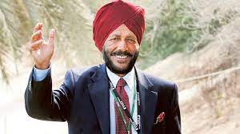

HELLO EVERYONE
I am Kavya Sri Kaspa
Student of Data Science at GVPCE(A)
About "The Flying Sikh"
Milkha Singh (20 November 1929 – 18 June 2021),also known as "The Flying Sikh", was an Indian track and field sprinter who was introduced to the sport while serving in the Indian Army. He is the only athlete to win gold at 400 metres at the Asian Games as well as the Commonwealth Games. He also won gold medals in the 1958 and 1962 Asian Games. He represented India in the 1956 Summer Olympics in Melbourne, the 1960 Summer Olympics in Rome and the 1964 Summer Olympics in Tokyo. He was awarded the Padma Shri, India's fourth-highest civilian honour, in recognition of his sporting achievements.
The race for which Singh was best remembered is his fourth-place finish in the 400 metres final at the 1960 Olympic Games, which he had entered as one of the favourites. He led the race till the 200m mark before easing off, allowing others to pass him. Various records were broken in the race, which required a photo-finish and saw American Otis Davis being declared the winner by one-hundredth of a second over German Carl Kaufmann. Singh's fourth-place time of 45.73 seconds was the Indian national record for almost 40 years.
From beginnings that saw him orphaned and displaced during the Partition of India, Singh has become a sporting icon in his country. In 2008, journalist Rohit Brijnath described Singh as "the finest athlete India has ever produced.
Singh died from complications of COVID-19 on 18 June 2021, at the age of 91, five days after his wife, Nirmal Saini.
